色の付いた枠のコードの、右上の「コピー」ボタンを押してください。コピーしたら、ブラウザーの「戻る」で PDF に戻れます。
練習のプロジェクトは samples/05_django/ にあります。この巻では、Django に慣れるために、準備の要らない SQLite（ファイル 1 つのデータベース）を使います。会社のサーバーでは PostgreSQL を使う（onprem の 04 の 5 章）ので、06 からは PostgreSQL で作ります。この巻の結果と画面の写しは、Django 5.2.18 で実際に動かした物です。
もっと詳しく:
docs/07_Django_バックエンド.md・docs/08_データベースとモデル.mdに、Django のより詳しい説明があります。
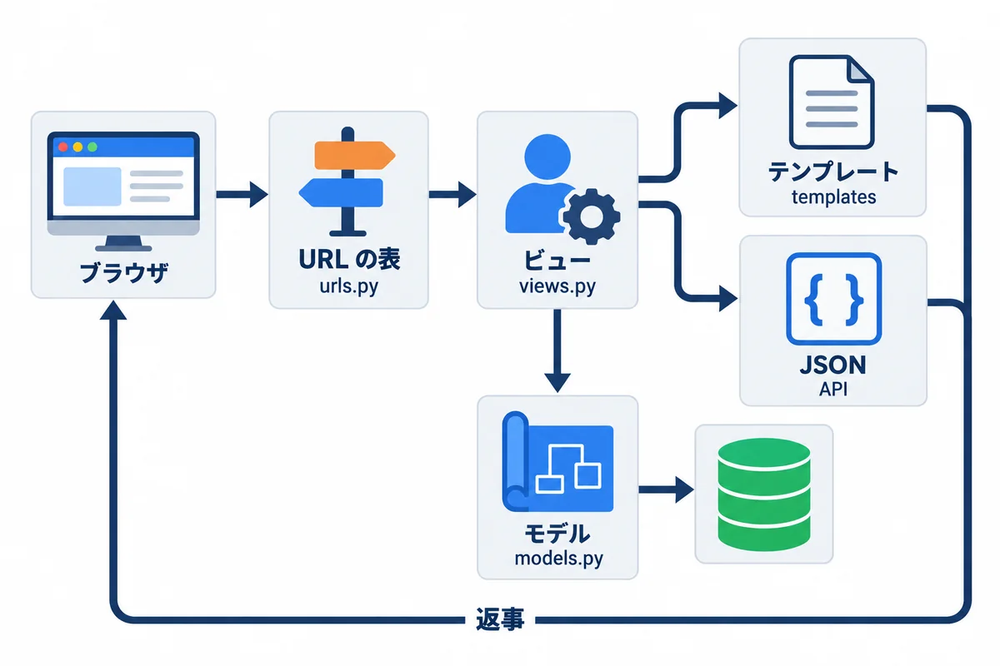
| 部品 | ファイル | 役目 | たとえ |
|---|---|---|---|
| URL の表 | urls.py |
どの URL を、どのビューに渡すか | 受付の案内板 |
| ビュー | views.py |
お願いを受けて、仕事をして、返事を作る | 担当者 |
| モデル | models.py |
データの形と、データベースとのやり取り | 帳簿の書式 |
| テンプレート | templates/ |
HTML のひな形に、データを埋め込む | 書類のひな形 |
| シリアライザ（DRF） | serializers.py |
データと JSON の変換と、入力の確かめ | 翻訳と検査の係 |
用語: Django（ジャンゴ：Python の Web アプリのフレームワーク。ログイン・管理画面・データベースの道具・安全の仕組みが、最初から入っている）
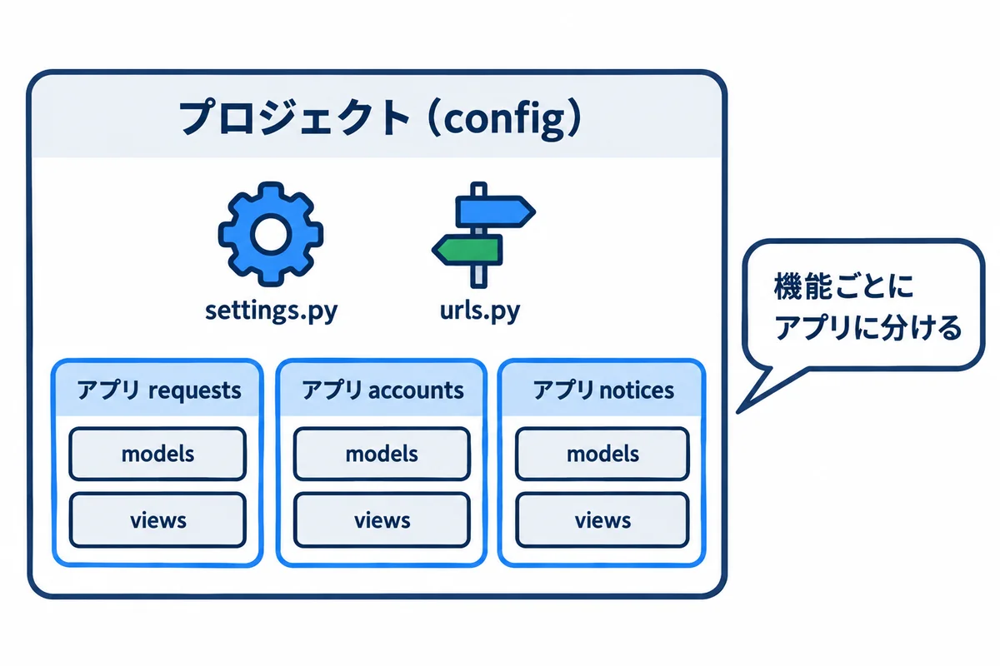
▶ 準備: 00 の 6.4（Python 3.14）。04 を終えていれば、もう入っています。
▶ 書く所と動かし方: 完成した物は、資料のフォルダの webapp_learning\samples\05_django\ にあります。自分で 1 から作って試すときは、自分用の新しいフォルダで始めます（完成した物のフォルダで startproject をすると、すでにあるファイルとぶつかります）。下は、資料を ~\Documents\def に置いたときの例です。
# 自分用の練習のフォルダを作って、その中へ移動する
mkdir ~\Documents\my-practice\05_django
cd ~\Documents\my-practice\05_django
# 使う部品の一覧（requirements.txt）を、資料のフォルダから写してくる
Copy-Item ~\Documents\def\webapp_learning\samples\05_django\requirements.txt .
py -3.14 -m venv .venv
.\.venv\Scripts\python.exe -m pip install -r requirements.txt
# プロジェクト（設定の入れ物）を作る。最後の . は「このフォルダに」
.\.venv\Scripts\django-admin.exe startproject config .
# アプリ（機能の入れ物）を作る
.\.venv\Scripts\python.exe manage.py startapp requests_app
▶ ここで初めて出てくるコード
Copy-Item（PowerShell）: ファイルやフォルダをコピーするコマンド。Copy-Item 元 先。最後の.は「今いるフォルダへ」という意味です。.\.venv\Scripts\django-admin.exe（Django の道具）: 仮想環境に入った Django の道具を動かす書き方。django-admin.exe startproject config .で、今いるフォルダに Django のプロジェクト（manage.pyとconfigフォルダ）を作ります。
requirements.txt:
Django==5.2.18
djangorestframework==3.18.3
tzdata==2026.6
config/settings.py で、次の所を直します（全部は、練習のファイルを見てください）。
INSTALLED_APPS = [
# …（最初から入っている物）…
'rest_framework', # API を作る部品
'requests_app', # 作ったアプリ
]
LANGUAGE_CODE = 'ja' # 管理画面やエラーの文を日本語に
TIME_ZONE = 'Asia/Tokyo' # 日本時間
LOGIN_URL = "/accounts/login/" # ログインしていないときに案内する画面
LOGIN_REDIRECT_URL = "/" # ログインした後に開く画面
| ファイル | 役目 |
|---|---|
manage.py |
Django の管理コマンドの入口（python manage.py コマンド） |
config/settings.py |
全体の設定 |
config/urls.py |
いちばん上の URL の表 |
requests_app/ |
依頼の機能のアプリ |
requests_app/models.py:
from django.conf import settings
from django.db import models
class Request(models.Model):
"""依頼 1 件"""
class Status(models.TextChoices):
# データベースに入る値（英字）と、画面に出す名前（日本語）
CIRCULATING = "circulating", "回覧中"
RETURNED = "returned", "差し戻し中"
PULLED_BACK = "pulled_back", "引き戻し中"
APPROVED = "approved", "回覧完了"
IN_PROGRESS = "in_progress", "対応中"
DONE = "done", "完了"
WITHDRAWN = "withdrawn", "取り下げ"
title = models.CharField("件名", max_length=100)
detail = models.TextField("内容", blank=True)
due_date = models.DateField("希望の納期")
status = models.CharField("状態", max_length=20, choices=Status.choices, default=Status.CIRCULATING)
requester = models.ForeignKey(
settings.AUTH_USER_MODEL, verbose_name="依頼者", on_delete=models.PROTECT, related_name="requests"
)
created_at = models.DateTimeField("作った日時", auto_now_add=True)
class Meta:
verbose_name = "依頼"
verbose_name_plural = "依頼"
ordering = ["-created_at"] # 新しい順
def __str__(self) -> str:
return f"{self.pk} {self.title}"
class Approval(models.Model):
"""回覧の 1 人分（だれが、何番目に、どうしたか）"""
class Decision(models.TextChoices):
WAITING = "waiting", "待ち"
APPROVED = "approved", "承認"
RETURNED = "returned", "差し戻し"
request = models.ForeignKey(Request, verbose_name="依頼", on_delete=models.CASCADE, related_name="approvals")
order = models.PositiveSmallIntegerField("順番")
approver = models.ForeignKey(settings.AUTH_USER_MODEL, verbose_name="承認者", on_delete=models.PROTECT)
decision = models.CharField("結果", max_length=20, choices=Decision.choices, default=Decision.WAITING)
decided_at = models.DateTimeField("決めた日時", null=True, blank=True)
class Meta:
verbose_name = "回覧"
verbose_name_plural = "回覧"
ordering = ["request", "order"]
constraints = [
# 1 つの依頼の中で、順番は重ならない
models.UniqueConstraint(fields=["request", "order"], name="unique_order_per_request"),
]
def __str__(self) -> str:
return f"{self.request_id} の {self.order} 番目"
▶ ここで初めて出てくるコード
.CharField()（Django）:models.CharField("件名", max_length=100)は、短い文字列の列（最大の長さを必ず決める）を表すモデルの項目です。最初の"件名"は、管理画面などに出る名前です。.TextField()（Django）: 長い文字列（何行もの文）の列を表すモデルの項目。blank=Trueを付けると、入力が空でもよくなります。.DateField()（Django）: 日付の列を表すモデルの項目。.ForeignKey()（Django）: ほかの表の 1 行を指す列（外部キー）を表すモデルの項目。models.ForeignKey(User, on_delete=models.PROTECT, related_name="requests")は「ユーザーを指す。指されているユーザーは消せない（PROTECT）。ユーザーの側からはuser.requestsで依頼をたどれる」。.DateTimeField()（Django）: 日時の列を表すモデルの項目。auto_now_add=Trueで、作った時の日時を自動で入れます。.PositiveSmallIntegerField()（Django）: 0 以上の小さな整数の列を表すモデルの項目（順番などに使う）。.UniqueConstraint()（Django）: 「この組み合わせの値は、表の中で重ならない」という決まりを表す物。fields=["request", "order"]は「同じ依頼の中で、同じ順番は 2 つ作れない」。
| 書き方 | 意味 | データベースでは（onprem の 02） |
|---|---|---|
class Request(models.Model): |
1 つのモデル ＝ 1 つのテーブル | CREATE TABLE |
models.CharField("件名", max_length=100) |
文字（100 文字まで）。最初の文字は画面に出す名前 | varchar(100) |
models.TextField(blank=True) |
長い文字。blank=True は「空でもよい」 |
text |
models.DateField・DateTimeField |
日付・日時 | date・timestamp |
models.TextChoices |
決まった値（DB に入る英字と、画面の日本語の組） | CHECK に近い（Django が確かめる） |
models.ForeignKey(..., on_delete=models.PROTECT) |
外部キー。PROTECT は「依頼がある社員は消せない」 |
REFERENCES |
on_delete=models.CASCADE |
依頼を消したら、その回覧も一緒に消える | ON DELETE CASCADE |
auto_now_add=True |
作ったときの日時を、自動で入れる | DEFAULT now() に近い |
class Meta: ordering = ["-created_at"] |
いつもの並べ方（新しい順） | ORDER BY |
UniqueConstraint(...) |
1 つの依頼の中で、順番が重ならない | UNIQUE |
settings.AUTH_USER_MODEL |
Django のユーザー（ログインする人） | auth_user テーブル |
状態の値を英字にする理由: データベースに入る値（
"circulating"）と、画面に出す名前（"回覧中"）を分けておくと、名前を変えたくなったときに、データを書きかえずに済みます。
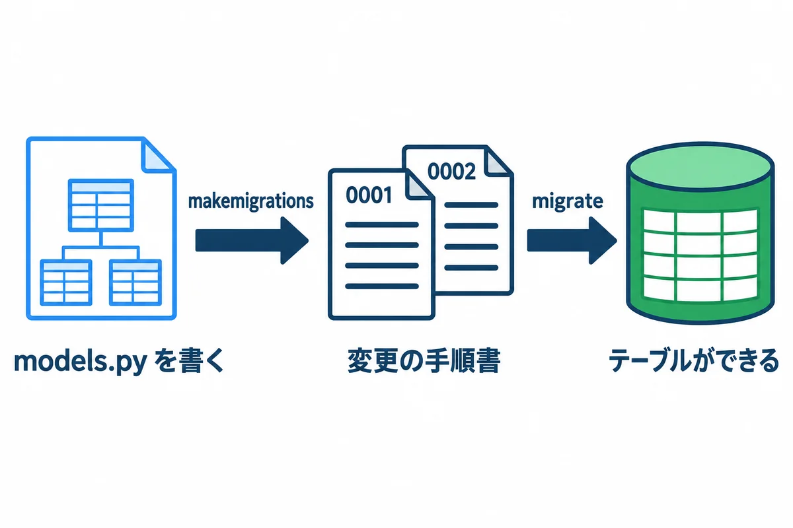
.\.venv\Scripts\python.exe manage.py makemigrations requests_app
.\.venv\Scripts\python.exe manage.py migrate
実際の出力（makemigrations）:
Migrations for 'requests_app':
requests_app\migrations\0001_initial.py
+ Create model Request
+ Create model Approval
実際の出力（migrate。最初の 1 回は、Django が最初から持っているテーブルも作るので長い。途中を省略）:
Operations to perform:
Apply all migrations: admin, auth, contenttypes, requests_app, sessions
Running migrations:
Applying contenttypes.0001_initial... OK
Applying auth.0001_initial... OK
…
Applying requests_app.0001_initial... OK
Applying sessions.0001_initial... OK
裏で作られる SQL は、sqlmigrate で見られます（実際の出力の最初の所）。
CREATE TABLE "requests_app_request" ("id" integer NOT NULL PRIMARY KEY AUTOINCREMENT, "title" varchar(100) NOT NULL, "detail" text NOT NULL, "due_date" date NOT NULL, "status" varchar(20) NOT NULL, "created_at" datetime NOT NULL, "requester_id" integer NOT NULL REFERENCES "auth_user" ("id") DEFERRABLE INITIALLY DEFERRED);
makemigrations → migrate の順に動かします。makemigrations が作る 0001_initial.py などの手順書は、Git に入れて、ほかの人やサーバーと共有します（サーバーでは migrate だけを動かす。onprem の 05 の 9.5）。用語: マイグレーション（モデルの変更を、番号付きの手順書にして、データベースに順に当てる仕組み）
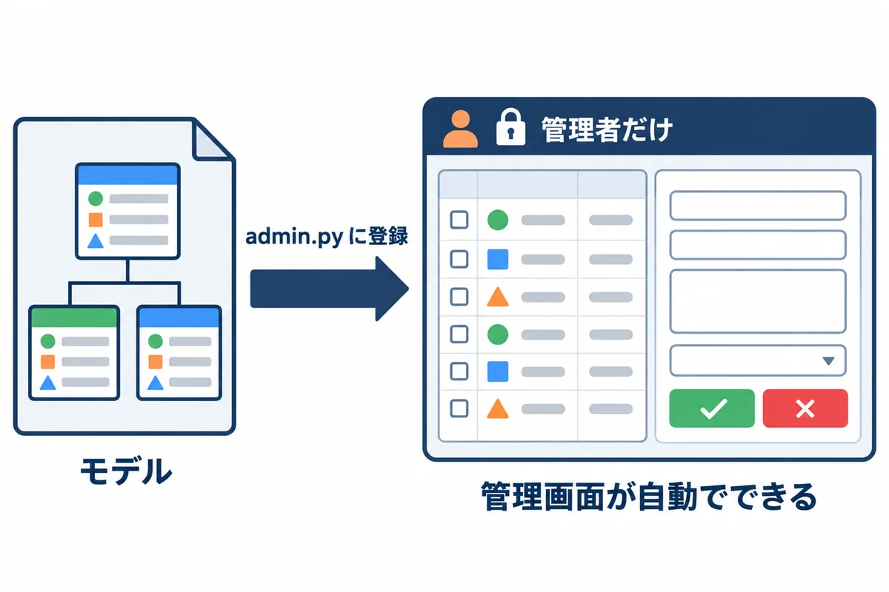
requests_app/admin.py:
from django.contrib import admin
from .models import Approval, Request
class ApprovalInline(admin.TabularInline):
"""依頼の画面の中に、回覧の表を並べる"""
model = Approval
extra = 0
@admin.register(Request)
class RequestAdmin(admin.ModelAdmin):
list_display = ["id", "title", "status", "due_date", "requester", "created_at"] # 一覧に出す列
list_filter = ["status"] # 右の絞り込み
search_fields = ["title", "detail"] # 検索の対象
inlines = [ApprovalInline]
▶ ここで初めて出てくるコード
.register()（Django）:@admin.register(Request)は、モデルを管理画面に登録して、画面から見たり直したりできるようにする書き方です。@admin（Django）:@admin.register(モデル)を、管理画面の設定のクラスの上に付けて、そのモデルを管理画面に出します。
# 管理画面に入れる人（スーパーユーザー）を作る。名前とパスワードを聞かれる
.\.venv\Scripts\python.exe manage.py createsuperuser
# 開発用のサーバーを起動する（止めるときは Ctrl+C）
.\.venv\Scripts\python.exe manage.py runserver
http://127.0.0.1:8000/admin/ を開いて、ログインします。
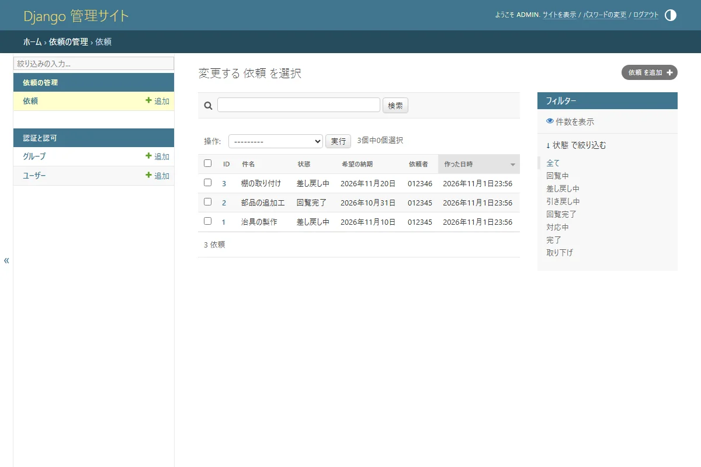
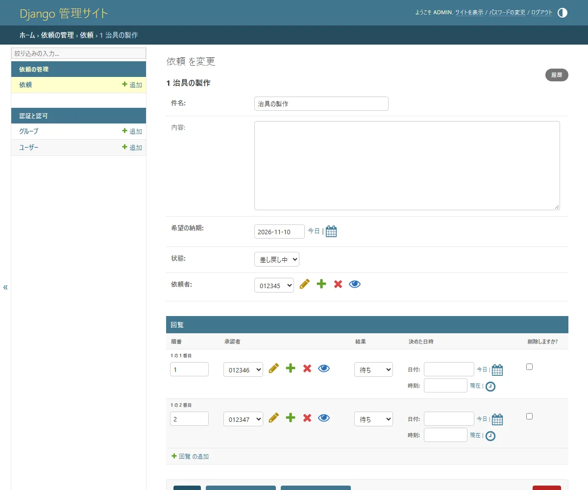
管理画面は、管理者のための道具です。 社員がふだん使う画面ではありません。状態を直接書きかえると、メールが送られないなど、アプリの決まりを飛ばしてしまいます（onprem の 02 の 2.5 と同じ注意）。
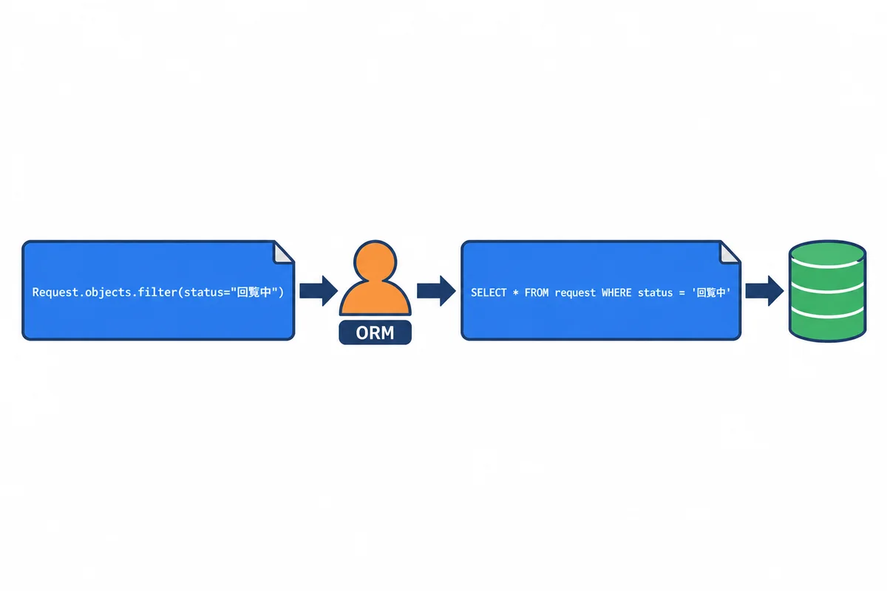
orm_demo.py（練習用のデータを作り直して、いろいろな操作をする）:
"""ORM の練習。使い方: .venv\\Scripts\\python.exe manage.py shell -c "import orm_demo"
（練習用のデータを作り直すので、何度動かしても同じ結果になる）"""
from datetime import date
from django.contrib.auth import get_user_model
from django.db.models import Count
from requests_app.models import Approval, Request
User = get_user_model()
# 0. 練習用のデータを作り直す
Request.objects.all().delete()
User.objects.filter(username__in=["012345", "012346", "012347"]).delete()
yamada = User.objects.create_user("012345", password="practice-only-1", first_name="太郎", last_name="山田")
sato = User.objects.create_user("012346", password="practice-only-2", first_name="花子", last_name="佐藤")
suzuki = User.objects.create_user("012347", password="practice-only-3", first_name="一郎", last_name="鈴木")
# 1. 作る（INSERT）
r1 = Request.objects.create(title="治具の製作", due_date=date(2026, 11, 10), requester=yamada)
r2 = Request.objects.create(title="部品の追加工", due_date=date(2026, 10, 31), requester=yamada, status=Request.Status.APPROVED)
r3 = Request.objects.create(title="棚の取り付け", due_date=date(2026, 11, 20), requester=sato, status=Request.Status.RETURNED)
Approval.objects.create(request=r1, order=1, approver=sato)
Approval.objects.create(request=r1, order=2, approver=suzuki)
print("作った件数:", Request.objects.count())
# 2. 絞る（WHERE）・並べる（ORDER BY）
circulating = Request.objects.filter(status=Request.Status.CIRCULATING)
print("回覧中:", [r.title for r in circulating])
print("山田さんの依頼（納期の近い順）:", [r.title for r in Request.objects.filter(requester=yamada).order_by("due_date")])
# 3. 裏で作られる SQL を見る
print("SQL:", circulating.query)
# 4. 1 件を取り出して、直す（UPDATE）
r = Request.objects.get(pk=r1.pk)
r.status = Request.Status.RETURNED
r.save()
print(r.title, "→", r.get_status_display())
# 5. 状態ごとの件数（GROUP BY）
counts = Request.objects.values("status").annotate(n=Count("id")).order_by("status")
print("状態ごとの件数:", {row["status"]: row["n"] for row in counts})
# 6. つながったデータ（回覧の順に、承認者の名前）
for a in Approval.objects.filter(request=r1).select_related("approver"):
print(f" {a.order} 番目: {a.approver.get_full_name()}（{a.get_decision_display()}）")
# 7. 無い物を get すると、エラーになる
try:
Request.objects.get(pk=999)
except Request.DoesNotExist:
print("999 番の依頼は無い")
▶ ここで初めて出てくるコード
.all()（Django）:Request.objects.all()は、表の全部の行を取り出す（まだ読みに行かない「問い合わせ」を作る）メソッドです。.delete()（Django）: 問い合わせに合う行（または 1 つの物）を、データベースから消すメソッド。消した件数が返ります。.filter()（Django）: Django の問い合わせで、条件に合う行だけに絞るメソッド。Request.objects.filter(status="approved")。項目名__条件（title__icontains="治具"など）で、いろいろな条件を書けます（11 巻の B-18）。.create_user()（Django）: Django の利用者（User）を作るメソッド。User.objects.create_user("012345", password="…")。パスワードは、そのまま保存せずに、ハッシュにしてから保存してくれます（create()で作ると、ハッシュにならないので使わない）。.create()（Django）: Django で、新しい行を作ってデータベースに保存するメソッド。Request.objects.create(title="…", …)は、作ると同時に保存します（.save()は要らない）。.count()（Django）: Django で、条件に合う行の数を数えるメソッド。Request.objects.count()は、全部の依頼の数。データベースにSELECT count(*)を送るので、全部を読み込むより速いです。.order_by()（Django）: 問い合わせの結果を並べかえるメソッド。order_by("due_date")は納期の近い順、order_by("-due_date")は遠い順（-で逆）。.save()（Django）: Django のモデル（1 行分の値）を、データベースに保存するメソッド。新しい物なら行を足し、もうある物なら行を変えます。.get_status_display()（Django）:choicesを決めた項目の、画面に出す名前（"approved"→"回覧完了"）を返すメソッド。Django がget_項目名_display()を自動で作ります。.values()（Django）: Django で、行をモデルではなく、決めた列だけの辞書で受け取るメソッド。Request.objects.values("status").annotate(n=Count("id"))は「状態ごとの数」を数える時の書き方です。.annotate()（Django）: 問い合わせの 1 行ごとに、計算した値（数など）を付け足すメソッド。values("status").annotate(n=Count("id"))は「状態ごとの件数」（SQL の GROUP BY）。.select_related()（Django）: つながった表（外部キーの先）を、1 回の問い合わせでまとめて読むメソッド。select_related("approver")で、ループの中で承認者を 1 人ずつ読みに行く無駄（N+1）を防げます。get_user_model()（Django）: 今のプロジェクトで使っている「ユーザー」のモデルを返す関数。自分でユーザーのモデルを作った時も、これで正しく取れます。date()（Python）: 日付を表す型。date(2026, 11, 10)のように作ります。
動かした結果（.\.venv\Scripts\python.exe manage.py shell -c "import orm_demo"）:
作った件数: 3
回覧中: ['治具の製作']
山田さんの依頼（納期の近い順）: ['部品の追加工', '治具の製作']
SQL: SELECT "requests_app_request"."id", "requests_app_request"."title", "requests_app_request"."detail", "requests_app_request"."due_date", "requests_app_request"."status", "requests_app_request"."requester_id", "requests_app_request"."created_at" FROM "requests_app_request" WHERE "requests_app_request"."status" = circulating ORDER BY "requests_app_request"."created_at" DESC
治具の製作 → 差し戻し中
状態ごとの件数: {'approved': 1, 'returned': 2}
1 番目: 花子 佐藤（待ち）
2 番目: 一郎 鈴木（待ち）
999 番の依頼は無い
| ORM | 意味 | SQL（onprem の 02） |
|---|---|---|
Request.objects.create(...) |
作る | INSERT |
.filter(status=...) |
絞る | WHERE |
.order_by("due_date")・"-due_date" |
並べる（- は大きい順） |
ORDER BY |
.get(pk=1) |
1 件だけ取り出す。無い・2 件以上はエラー | WHERE id = 1 |
r.save() |
直した物を保存 | UPDATE |
.values("status").annotate(n=Count("id")) |
状態ごとに数える | GROUP BY |
.select_related("approver") |
つながった表も、1 回でまとめて読む | JOIN |
.count() |
数 | COUNT(*) |
str(qs.query) で見える SQL は、読むための物です（= circulating のように、値の ' が付いていない）。本当は、値は SQL と別にデータベースへ渡されます。だから、入力に ' や SQL の文字が入っていても、SQL インジェクション（10）が起きません。get_full_name() は「名 姓」の順で作るためです。日本の名前の順にしたいときは、06 で、氏名の項目を自分で持つ作りにします。用語: ORM（オーアールエム。Object-Relational Mapping：プログラムの書き方で、データベースの読み書きをする仕組み。SQL は ORM が作る）
用語: クエリセット（QuerySet：
filterなどで作る「データベースへのお願いの下書き」。本当に読むのは、forで回すときなど、使うときになってから）
requests_app/views.py:
from django.contrib.auth.decorators import login_required
from django.shortcuts import render
from rest_framework import permissions, viewsets
from .models import Request
from .serializers import RequestSerializer
@login_required
def request_list(request):
"""自分の依頼の一覧（Django のテンプレートで HTML を作る）"""
items = Request.objects.filter(requester=request.user)
return render(request, "requests_app/request_list.html", {"items": items})
class RequestViewSet(viewsets.ModelViewSet):
"""依頼の API（JSON）。一覧・1 件・作る・直す・消すを、まとめて用意する"""
serializer_class = RequestSerializer
permission_classes = [permissions.IsAuthenticated]
def get_queryset(self):
# 自分の依頼だけ（ほかの人の依頼は、見えも直せもしない）
return Request.objects.filter(requester=self.request.user).select_related("requester")
def perform_create(self, serializer):
# 依頼者は、送られてきた値ではなく、ログインしている人にする
serializer.save(requester=self.request.user)
▶ ここで初めて出てくるコード
render()（Django）: Django で、テンプレート（HTML のひな形）に値を入れて、答え（HTML）を作る関数。render(request, "テンプレート名", {"名前": 値})。@login_required（Django）: 関数の画面（ビュー）の上に付けると、ログインしていない人をログインの画面へ移す印（デコレーター）です。
requests_app/urls.py（アプリの URL の表）:
from django.urls import include, path
from rest_framework.routers import DefaultRouter
from . import views
router = DefaultRouter()
router.register("requests", views.RequestViewSet, basename="request")
urlpatterns = [
path("", views.request_list, name="request_list"),
path("api/", include(router.urls)),
]
▶ ここで初めて出てくるコード
path()（Django）: URL と、それに答える画面（ビュー）を結び付ける関数。path("requests/<int:pk>/", views.detail)の<int:pk>は、URL の中の数をpkという名前で受け取ります。include()（Django）: URL の決まりの中で、ほかのファイル（アプリ）の URL の決まりを、まとめて取り込む関数。path("api/", include("requests_app.urls"))のように使います。
config/urls.py（いちばん上の URL の表。accounts/ は Django に付いているログイン・ログアウトの画面）:
urlpatterns = [
path('admin/', admin.site.urls),
path('accounts/', include('django.contrib.auth.urls')),
path('', include('requests_app.urls')),
]
requests_app/templates/requests_app/request_list.html:
{% load static %}
<!doctype html>
<html lang="ja">
<head>
<meta charset="utf-8">
<title>自分の依頼</title>
<link rel="stylesheet" href="{% static 'style.css' %}">
</head>
<body>
<header class="site-header">
<strong>依頼・承認アプリ</strong>
<nav><span>{{ user.get_full_name|default:user.username }} さん</span></nav>
</header>
<main>
<h1>自分の依頼</h1>
<table>
<thead>
<tr><th>番号</th><th>件名</th><th>希望の納期</th><th>状態</th></tr>
</thead>
<tbody>
{% for r in items %}
<tr>
<td>{{ r.id }}</td>
<td>{{ r.title }}</td>
<td>{{ r.due_date|date:"Y-m-d" }}</td>
<td><span class="badge badge-{{ r.status }}">{{ r.get_status_display }}</span></td>
</tr>
{% empty %}
<tr><td colspan="4">依頼はまだありません</td></tr>
{% endfor %}
</tbody>
</table>
</main>
</body>
</html>
| テンプレートの書き方 | 意味 |
|---|---|
{{ r.title }} |
値を埋め込む。< などの記号は、自動で無害な形に変わる（XSS を防ぐ。10） |
{% for r in items %} … {% empty %} … {% endfor %} |
くり返し。empty は 1 件も無いとき |
{{ r.due_date\|date:"Y-m-d" }} |
日付の書き方を決める（フィルター） |
{{ r.get_status_display }} |
状態の、画面に出す名前（回覧中） |
{% static 'style.css' %} |
CSS などの置き場所の URL |
{% csrf_token %}（ログインの画面） |
フォームに、CSRF の札を入れる（10） |
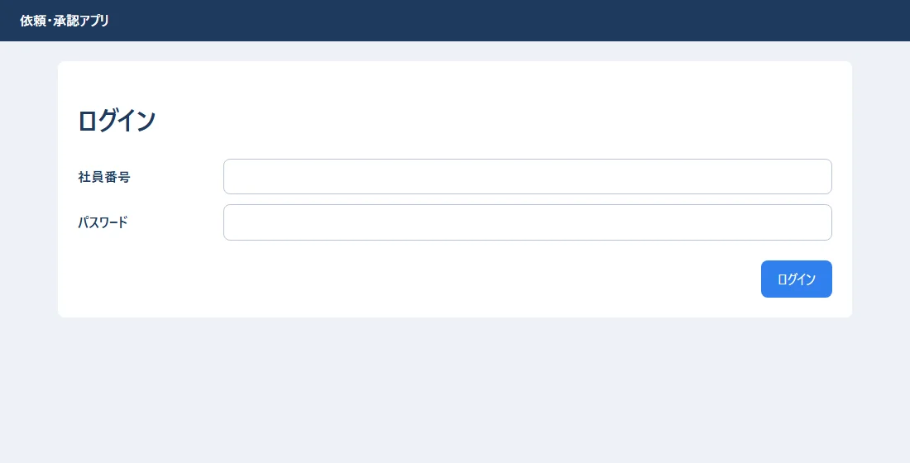
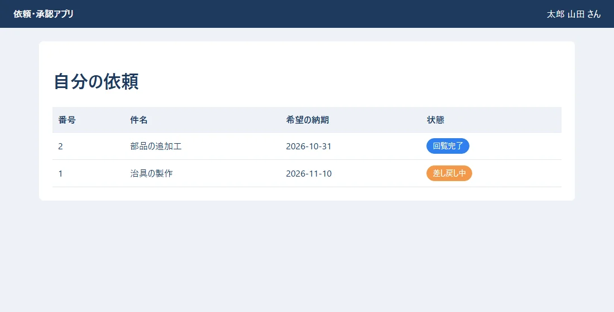
@login_required を付けたビューは、ログインしていないと、ログインの画面に案内されます。Request.objects.filter(requester=request.user) で、自分の依頼だけを出しています。ほかの人の依頼が見えないようにするのは、画面ではなく、サーバーの仕事です（10）。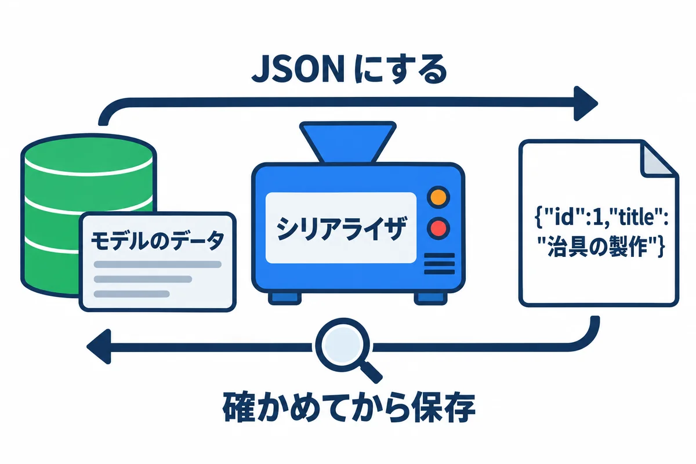
React の画面（03・06）は、サーバーと JSON でやり取りします。JSON の API は、Django REST framework（DRF）で作ります。
requests_app/serializers.py:
from rest_framework import serializers
from .models import Request
class RequestSerializer(serializers.ModelSerializer):
"""依頼 ⇔ JSON の変換と、入力の確かめ"""
status_label = serializers.CharField(source="get_status_display", read_only=True)
requester_name = serializers.CharField(source="requester.get_full_name", read_only=True)
class Meta:
model = Request
fields = ["id", "title", "detail", "due_date", "status", "status_label", "requester_name", "created_at"]
read_only_fields = ["status", "created_at"] # 状態は、画面から直接は変えさせない
def validate_title(self, value: str) -> str:
if not value.strip():
raise serializers.ValidationError("件名を入れてください")
return value
▶ ここで初めて出てくるコード
.ValidationError()（Django REST framework）: Django REST framework で、入力のまちがいを知らせるエラー。raise serializers.ValidationError("件名を入れてください")と書くと、その文が400の答えに入って返ります。
| 書き方 | 意味 |
|---|---|
ModelSerializer |
モデルから、JSON の形と確かめを自動で作る |
fields = [...] |
JSON に出す項目（出さない項目は書かない。パスワードなどを漏らさない） |
read_only_fields = ["status", ...] |
送られてきても、無視する項目 |
source="get_status_display" |
別の値（状態の名前）を、JSON に足す |
def validate_title(...) |
項目ごとの確かめ。ValidationError で断る |
ビューの RequestViewSet（7 章の views.py）は、次の URL をまとめて用意します。
| URL | 方法 | 何をする |
|---|---|---|
/api/requests/ |
GET | 自分の依頼の一覧 |
/api/requests/ |
POST | 依頼を作る |
/api/requests/1/ |
GET・PUT・PATCH・DELETE | 1 件を見る・直す・消す |
ブラウザで http://127.0.0.1:8000/api/requests/ を開くと、DRF が、人が読める画面で見せてくれます（ログインしている人の依頼だけ）。
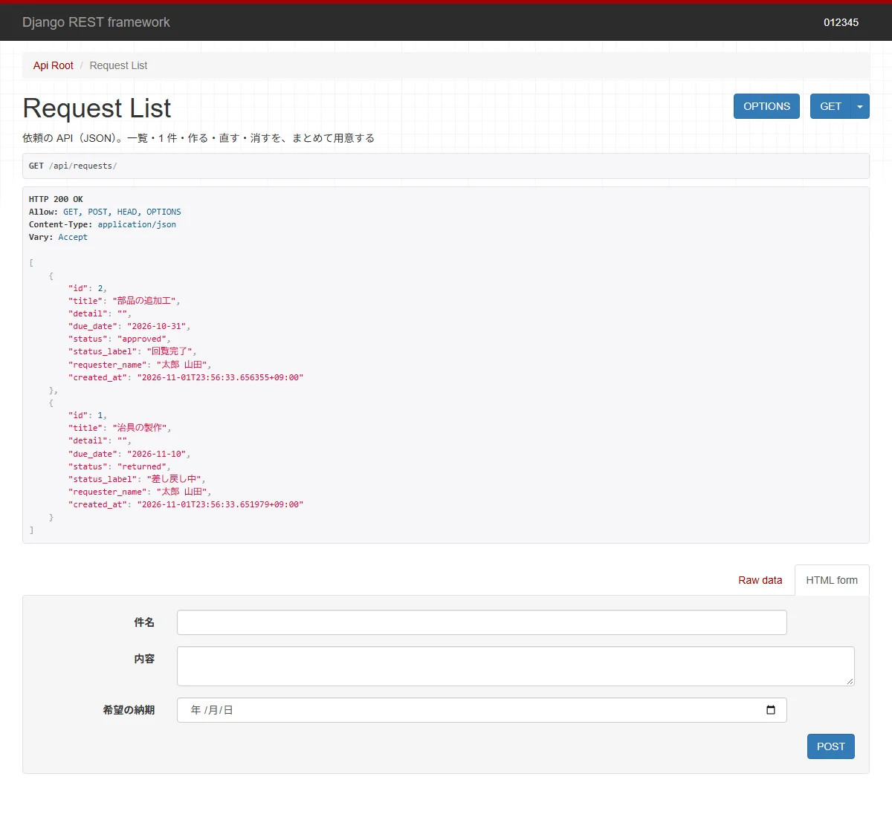
perform_create で、依頼者を「ログインしている人」にしています。送られてきた JSON に別の人の番号が入っていても、使いません。get_queryset で、自分の依頼だけに絞っています。/api/requests/3/ のように、ほかの人の依頼の番号を打っても、「見つからない（404）」になります。用語: API（エーピーアイ：プログラムどうしがやり取りするための入口。ここでは、JSON でデータをやり取りする URL の一式）
用語: Django REST framework（DRF：Django で JSON の API を作るための部品）
requests_app/tests.py:
from datetime import date
from django.contrib.auth import get_user_model
from rest_framework.test import APITestCase
from .models import Request
class RequestApiTests(APITestCase):
def setUp(self):
User = get_user_model()
self.yamada = User.objects.create_user("012345", password="pass-for-test-1", first_name="太郎", last_name="山田")
self.sato = User.objects.create_user("012346", password="pass-for-test-2")
Request.objects.create(title="治具の製作", due_date=date(2026, 11, 10), requester=self.yamada)
def test_ログインしていないと見られない(self):
res = self.client.get("/api/requests/")
self.assertEqual(res.status_code, 403)
def test_自分の依頼だけが見える(self):
self.client.force_authenticate(self.sato)
res = self.client.get("/api/requests/")
self.assertEqual(res.status_code, 200)
self.assertEqual(res.json(), [])
def test_依頼を作ると回覧中になり依頼者は自分になる(self):
self.client.force_authenticate(self.yamada)
res = self.client.post("/api/requests/", {"title": "棚の取り付け", "due_date": "2026-11-20", "status": "done"})
self.assertEqual(res.status_code, 201)
self.assertEqual(res.json()["status"], "circulating") # 送った "done" は無視される
self.assertEqual(res.json()["requester_name"], "太郎 山田")
def test_件名が空なら断る(self):
self.client.force_authenticate(self.yamada)
res = self.client.post("/api/requests/", {"title": " ", "due_date": "2026-11-20"})
self.assertEqual(res.status_code, 400)
self.assertIn("title", res.json())
▶ ここで初めて出てくるコード
.assertEqual()（Django）: テストで、2 つの値が同じかを確かめるメソッド。self.assertEqual(res.status_code, 403)。.force_authenticate()（Django REST framework）: テストで、決めたユーザーとしてログインしたことにして API を呼ぶためのメソッド（DRF のテスト用のクライアント）。.json()（Django）: テストで受け取った答え（レスポンス）の本文を、JSON として読んで、Python のリストや辞書にするメソッド。self.assertEqual(res.json(), [])。.post()（Django）: テストの係（self.client）で、POST のリクエストを送るメソッド。self.client.post("/api/requests/", {…})で、サーバーを動かさずに、API を試せます。.assertIn()（Django）: テストで、値が入れ物の中にあるかを確かめるメソッド。self.assertIn("title", res.json())。
.\.venv\Scripts\python.exe manage.py test requests_app
実際の出力:
Found 4 test(s).
Creating test database for alias 'default'...
System check identified no issues (0 silenced).
....
----------------------------------------------------------------------
Ran 4 tests in 7.733s
OK
Destroying test database for alias 'default'...
. 1 つが、1 つのテストの成功です。失敗すると F、エラーは E になり、どこが違ったかが表示されます。用語: 自動のテスト（プログラムが正しく動くかを確かめる、プログラム。何度でも同じ確かめをすぐにできる）
| 症状 | 原因 | 直し方 |
|---|---|---|
no such table: requests_app_request |
migrate をしていない |
makemigrations → migrate |
| モデルを直したのに、反映されない | makemigrations を忘れた |
makemigrations → migrate |
TemplateDoesNotExist |
テンプレートの置き場所・名前の違い。INSTALLED_APPS にアプリが無い |
requests_app/templates/requests_app/…html の形か確かめる |
| CSS が当たらない（開発用のサーバー） | static/ の置き場所の違い・{% load static %} 忘れ |
アプリの中の static/ に置く |
| 管理画面にモデルが出ない | admin.py で登録していない |
@admin.register(モデル) |
DoesNotExist |
get で、無い物を取り出した |
filter(...).first() を使うか、try で受け止める |
IntegrityError |
外部キーの相手が無い・重複してはいけない値が重なった | 入れる値を確かめる（onprem の 02 の 8 章と同じ考え方） |
API が 403 |
ログインしていない・CSRF の札が無い（ブラウザから POST するとき） | 06・10 |
You're accessing the development server over HTTPS |
runserver に https:// でつないだ |
http://127.0.0.1:8000/ で開く |
本番で runserver を使ってしまう |
開発用のサーバーは、速さも安全も、本番向けではない | 本番は waitress（onprem の 05） |
Request に「数量」（quantity、1 以上の整数）の項目を足して、makemigrations → migrate を動かしてください。管理画面に出るか確かめます（ヒント：models.PositiveIntegerField("数量", default=1)）。list_filter に足す）。orm_demo.py に、「納期が 2026-11-01 より前の依頼」を出す 1 行を足してください（ヒント：filter(due_date__lt=date(2026, 11, 1))）。tests.py に、「件名が 101 文字なら断る」テストを足してください。| 用語 | 短い説明 | 章 |
|---|---|---|
| プロジェクト・アプリ | 設定の入れ物／機能の入れ物 | 2 |
| モデル・フィールド | データの設計図／その項目 | 3 |
| TextChoices | 決まった値の組 | 3 |
| マイグレーション・makemigrations・migrate | テーブルの変更の手順書／作る／当てる | 4 |
| 管理画面・スーパーユーザー | 管理者のための画面／何でもできる人 | 5 |
| ORM・クエリセット | Python で書く DB の操作／その下書き | 6 |
| ビュー・URL の表・テンプレート | 仕事をする関数／案内板／HTML のひな形 | 7 |
| DRF・シリアライザ・ViewSet・API | API の部品／JSON と確かめの係／API をまとめて作る仕組み／入口 | 8 |
| テスト | 自動の確かめ | 9 |